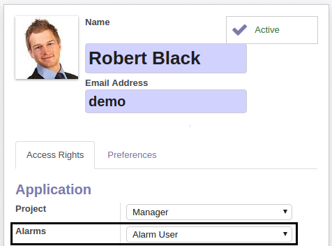
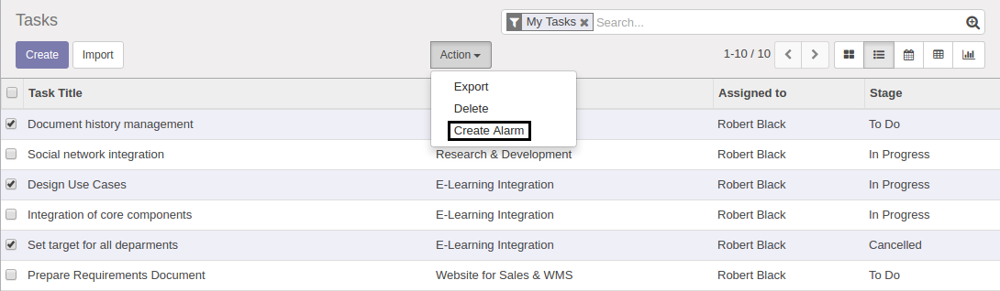
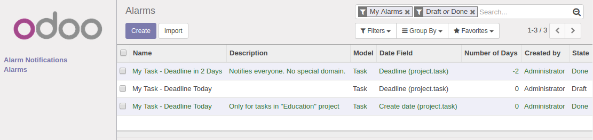
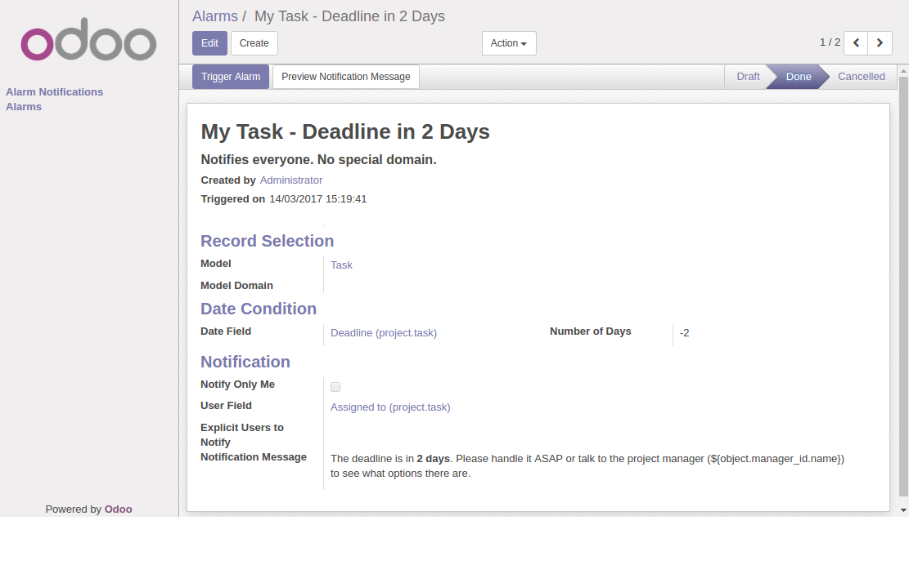
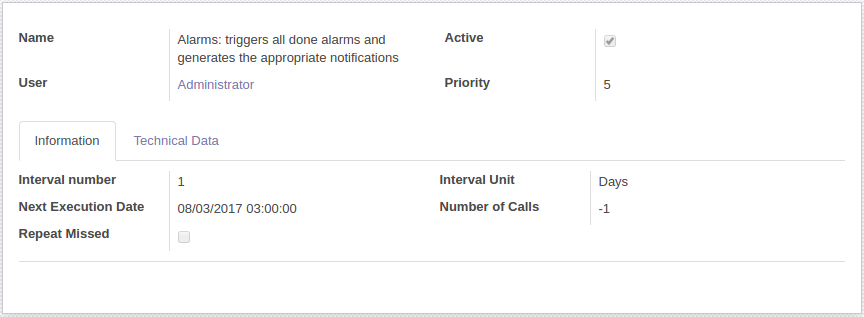
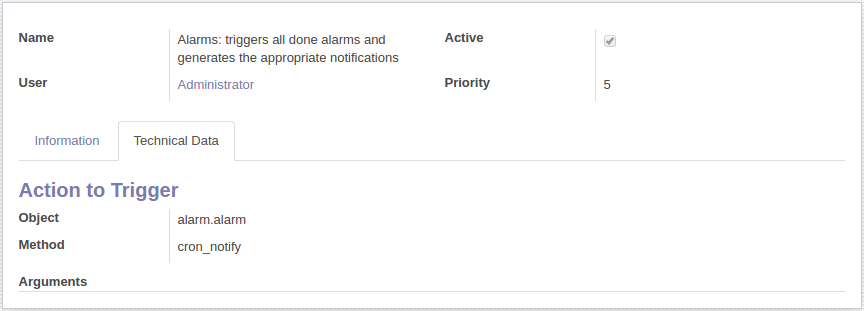
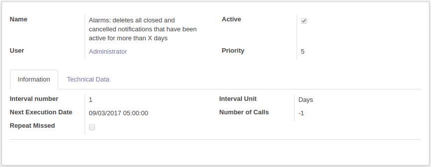

All users belonging to the Alarms / Alarm User group have access to the Alarms area, where
they can manage all their alarms. Users belonging to the Alarms / Manager group can,
additionally, manage the alarms of other users.

Additionally, these users have access to a shortcut action named Create Alarm placed in the
Action drop-down available in all list views when one or more records are selected and in all
form views. Such an action allows the user to create very easily an alarm exclusively for the selected
records.

By default, the alarms list view shows only the alarms created by the current user that are draft or
done. However, the filters can be modified to adapt the results to the user's needs.

An alarm contains the following information:
-
Name: short descriptive name for the alarm. This name is assigned to all notifications
generated by this alarm.
- Description: further details to better understand the purpose of the alarm.
- Created by: the user that created the alarm and therefore, the alarm owner.
-
Triggered on: the date/time on which this alarm was last triggered. Alarms are normally
triggered every day in the early morning by a scheduled action. However, a user can also
trigger it manually by means of the Trigger Alarm button. Note that even if the alarm is
triggered multiple times in a row, the same notification will not be generated more than once.
-
Model: the type of record to be checked in order to decide if a notification must be
generated or not.
-
Model Domain: python domain used to select only records with certain characteristics. For
example, we can configure the alarm to generate notifications only for records in the draft state
and whose creator is me by using the following domain:
['&', ('state', '=', 'draft'), ('create_uid', '=', my_uid)].
The following variables and libraries are available:
- my_uid: variable with my user ID.
- date: library to manage dates (e.g., date.today())
- datetime: library to manage date with times (e.g., datetime.now())
- timedelta: library to manage time deltas (e.g., date.today() + timedelta(days=2))
-
Date Field: date(time) field within the specified Model whose check may trigger the
generation of a notification. When checking this field, if time information is present, it is
simply ignored (e.g., "2017-01-25 09:30:00" is treated as "2017-01-25").
-
Number of Days: a negative integer indicates that a notification will be generated this
number of days before the date set in Date Field; a positive integer indicates that a
notification will be generated this number of days after the date set in Date Field; a zero
indicates that a notification will be generated right on the date set in Date Field.
-
Notify Only Me: this flag indicates whether I will be the only person to be notified or not.
Note that only users belonging to the Alarms / Manager group can actually create alarms
that notify other users.
-
User Field: the field within the specified Model containing the user(s) to be
notified. If Notify Only Me is set, I will be the only person to be notified but I must be
also the user specified in this field.
- Explicit Users to Notify: static set of users that must always be notified.
-
Notification Message: information that will be provided to the notified user.
Here we can provide static information but also dynamic information. To provide dynamic information
we must use MAKO templates* (same technique as the one used in email templates). For example, if we
have an alarm for project tasks and we want to include in the notification message the name of the
project manager, we can use the template
${object.manager_id.name}.
To verify that the template is correct and that the notification message looks like desired, we can
use the Preview Notification Message button.
-
State: indicates if the alarm is draft (not ready to be automatically triggered),
done (ready to be automatically triggered) or cancelled. Note that any alarm can be manually
triggered by means of the Trigger Alarm button.
* Brief explanation about MAKO templates: all MAKO templates are represented with
${...}. Within the braces we can provide any python code,
taking into account that we can only access a limited set of functions and variables. The most
important variable we have is object, which represents the
record triggering the alarm (in our example, a project task).

Configuration by Admin
Firstly, the admin must assign the appropriate Alarms security group to all users. A
description of each security group is provided below:
- No Group: the user has no access to the Alarms module.
- Notification User: the user has access to their own alarm notifications.
-
Alarm User: the user has access to their own alarms and notifications. Their alarms can
only be configured to notify themselves.
-
Manager: the user has access to all alarms and notifications. Their alarms can be
configured to notify anybody.
Secondly, the admin must make sure that the scheduled action in charge of triggering done
alarms is properly configured (i.e., active and at least, executed once a day). By default, the
execution is scheduled to take place every day at 3 am. Note that even if the alarm is triggered
multiple times a day, the same notification will not be generated more than once.


Finally, the admin must also make sure that the scheduled action in charge of deleting closed
and cancelled notifications is properly configured. By default, this scheduled action is active,
set to be executed every day at 5 am, and configured to delete all closed and cancelled
notifications that have been active for more than 15 days. Note that the admin can deactivate this
scheduled action in order to prevent notifications from being automatically deleted or modify the
"15 days" argument to some other value (a positive integer must be provided).
